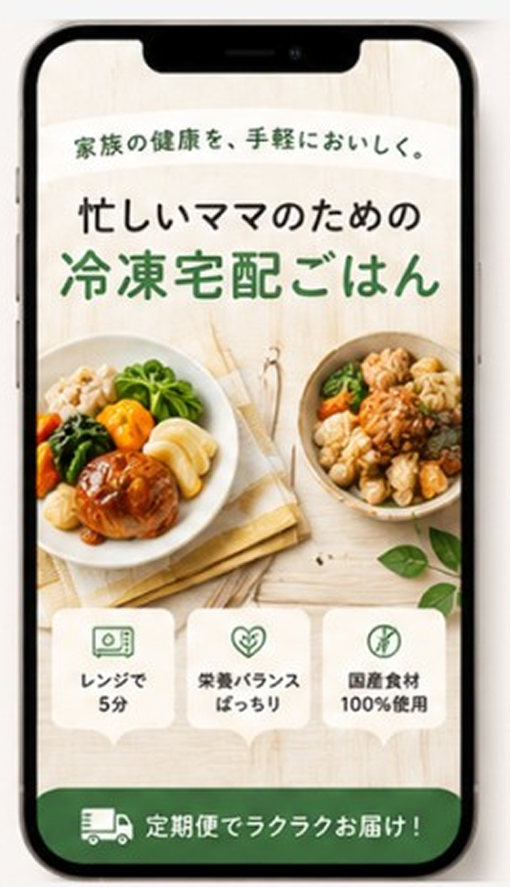
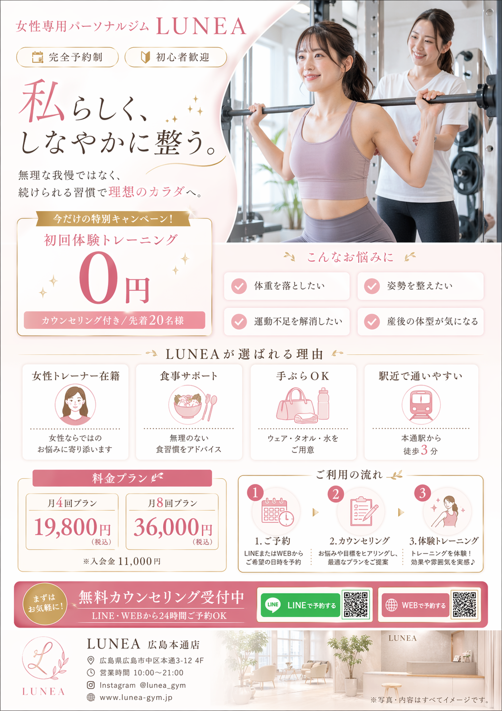
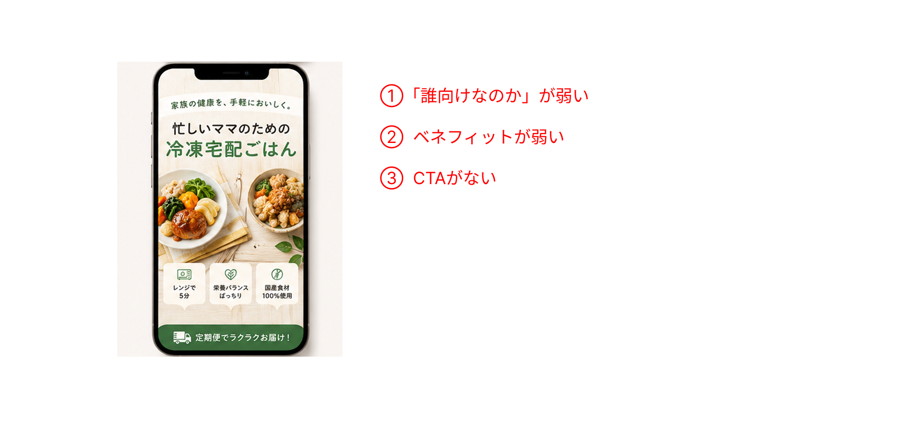
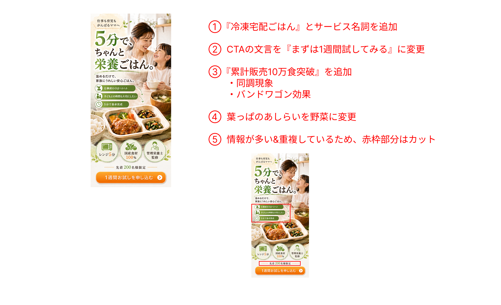

lilis+ リニューアル記念
特別企画
lilis+ は lilisコンサルの卒業生コミュニティです
🎉
会員限定ウェビナーを特別公開！
通常は lilis+ 会員のみが参加できるウェビナーです🌸
1
受講生
2
卒業生
チャットに数字を送ってください！
重要なご案内
前田文花
鵜飼早紀
「この2つのデザインを見てください」
1

2
1
仕事で活用している
2
日常的に使う
3
少し触ったことある
4
ほぼ使ってない
これまでのAI（ChatGPT など）
質問する
→ 答えが返ってくる
次の作業はまた自分でやる
AIエージェント（Claude Code など）
自分で考えて、自分で動く
📧 メール対応
「メールボックス確認して返信を下書き保存して」→ 受信内容を読んで文脈を理解し、返信文を書いて下書きへ
🚀 新規事業
「新しい事業を始めたい」→ 競合調査・市場調査・事業設計・LP制作まで全部やる
GPT Image 2.0
送ったプロンプト：
「架空の女性向けパーソナルジムのチラシを作ってください」

知識ゼロでも、文章を入力するだけで。綺麗なデザインが出る時代になりました。
ぶっちゃけ、なくなっちゃう？
1
はい、危機感を感じてる
2
いや、大丈夫だと思う
3
そんなことない


伝わるか？
行動につながるか？ / 見やすいか？
01
商用利用はOK（条件付き）
OpenAIの利用規約に従う限り商用利用可能。生成画像の権利はユーザーに帰属する。
ただし日本の著作権法上、権利が認められるには「人間の創作的寄与」が必要。プロンプトの試行錯誤・編集の過程が重要。
02
これはやってはいけない
・実在する人物・著名人の顔を生成 ・既存キャラクター・ブランドロゴの再現
・「〇〇風に」と著作権者を指定して生成 ・生成後に背景へのロゴ混入を見落とす
※2025年11月、AI生成画像の無断複製で全国初の書類送検事例が発生
03
クライアント案件での使い方
・AI生成であることを必ず開示・合意を取る ・契約書に著作権の帰属を明記する
・生成後は既存作品との類似チェックを ・OpenAIは非侵害を保証しない＝最終責任は制作者
・法整備は進行中。判例・規約の変化を継続ウォッチ
Q & A
なんでも聞いてください！
アンケートにもご回答ください
ご参加ありがとうございました！lilis+ でまたお会いしましょう 🙌
卒業生の方はこのあと少々お時間ください。